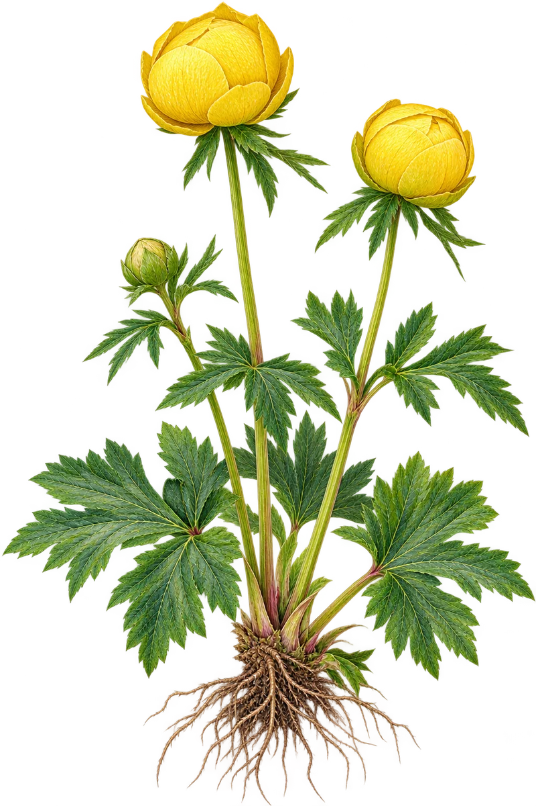

Ballblom
Trollius europaeusV2 produsert · artsgodkjenning gjenstår
V2: To tydelig kuleformede sitrongule blomster med innoverbøyde, overlappende begerblad; bladverket er håndfliket med dypt tannete fliker. Fortsatt ikke godkjent: kontroller blomstenes egentlige åpning og bladstillingen mot flere artsfotografier.
Artsbeskrivelse